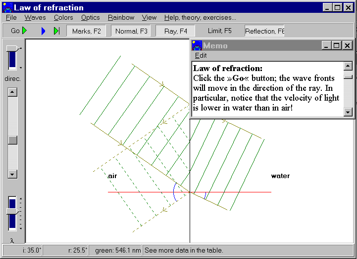

Content
The rainbow program consists of a series of simulations in
colors, optics, waves and the physics of the rainbow. They're all
active, i.e. the user can make changes. There is a thorough
online help for all simulations and an number of exercises all
through. The program can be installed on PCs with Windows 95 or newer versions
of Windows..
The Rainbow is freeware.

Carl Hemmingsen
Borgmestervaenget 22
DK 3600 Frederikssund
Denmark